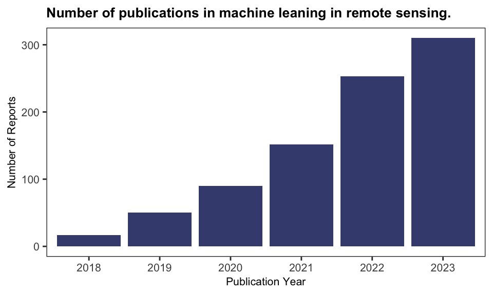
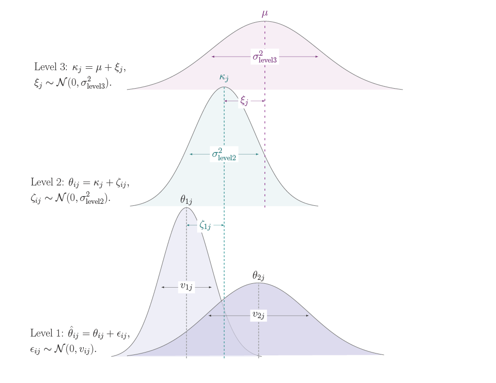

| Item | Explanation |
|---|---|
| Population | Studies monitoring SDGs. |
| Intervention | Application of machine learning models to remote sensing data. |
| Comparison | Comparison of different ML models and methodologies used in remote sensing applications. |
| Outcomes | Variability in the overall accuracy of machine learning models in monitoring SDGs. |
| Timing | Studies that focused on predicting current conditions rather than predicting future changes |
| Setting | Various geographic locations and environmental settings where remote sensing data is applied for SDG monitoring. |
| Note: | |
| PICOTS framework items and corresponding role in structuring this review. |
3 Methods
The methods adopted in this study are outlined in steps following the framework proposed by Debray et al. (2017). Additionally, efforts were made to follow the Preferred Reporting Items for Systematic Reviews and Meta-Analyses (PRISMA) guidelines (Page et al., 2021), however due to the nature of this research, strict adherence was not always possible. For the statistical analyses metafor (Viechtbauer, 2010) and dmetar (Harrer et al., 2019) packages the were used. The code was executed using R version 4.2.3 (2023-03-15).
Formulating the review question and protocol
The PICOTS (population, intervention, comparison, outcome, timing, and setting) system was used to frame the review aims for this analysis (Debray et al., 2017). As outlined by Table 3.1, the using this framework, the research question was formulated to examine: (1) the overall performance (2) and heterogeneity of machine learning models applied to remote sensing in the context of SDGs, and (3) to assess the influence of specific study features on model performance.
To address this question, peer-reviewed articles published between January 2018 and December 2023 were gathered (on January 15 and 16, 2024) from several academic databases, including ScienceDirect and Taylor & Francis Online, as shown in Figure 3.3. Several academic databases were used to reduce potential bias from database coverage (Hansen et al., 2022; Tawfik et al., 2019). While Google Scholar can be useful for supplementary searches and grey literature, it is generally considered unsuitable as the primary source for systematic reviews (Gusenbauer & Haddaway, 2020). Furthermore, Google Scholar searches results are not fully reproducible (Gusenbauer & Haddaway, 2020) and search result references that cannot be downloaded in batches, therefore the decision mas made not to use Google Scholar to search for papers.
The search terms were “remote sensing AND machine learning AND sustainable development goals”. The search results from these databases were downloaded in RIS format and imported into Zotero for further processing. Duplicate articles were handled using Zotero’s “merge duplicates” function.
Specific inclusion and exclusion criteria
After removing review articles and non-research papers, a total of 811 relevant articles remained. Of these potentially relevant papers, 35% were published in 2023, highlighting the growth of research in this field. The trend, as illustrated in Figure 3.1, is consistent with other similar research, for example, Ekmen & Kocaman (2024), which reported a sharp increase in publications related to machine learning and remote sensing for SDG monitoring.

Due to the large number of papers remaining, a random sample of 200 articles was drawn for title and abstract screening. These potentially relevant articles were screened independently by three reviewers (the author and two internal supervisors) using the R package metagear (Lajeunesse, 2016). The papers were selected according to the following criteria: a) publications utilizing remote sensing and machine learning techniques, (b) indication of a quality assessment for example overall accuracy. Table 3.2 shows the words highlighted in the abstract screening phase to aid the reviewers and Figure 3.2 shows the user interface highlighting these keywords.
metagear user interface during abstract screening phase as a visual cue to speed up the screening process
| Category | Keywords |
|---|---|
| General | empirical, result, predictive, analysis, sustainable development goal, sustainable development |
| Data related | remotely sensed, remote sensing, satellite, earth observation |
| Models | deep learning, machine learning, classification, classifier, regression, supervised, test set, training set, cart, svm, rf, ann, random forest, support vector machine, regression tree, decision tree, neural network, boosting, bagging, gradient, bayes |
| Quality metrics | overall accuracy, accuracy, coefficient of determination, rmse, mse, f1, precision, auc, roc, recall, sensitivity, specificity, mean absolute error, error, mae |
| To omit | systematic review, meta-analysis, review |

As shown in Figure 3.3, of the 200 abstracts screened 57 were deemed potentially relevant by all three reviewers. To have comparable performance metrics it decided to focus on papers related to classification. The titles and abstracts of the 57 articles were screened using metagear dividing them to classification (40) and regression (17) papers. In the 40 papers, overall accuracy was the most commonly reported outcome metric and therefore it was decided to include all papers that report overall accuracy.
Feature collection
Using the selected papers and previous systematic reviews a list of potential study features was created and structured in a table for data extraction. Table 3.3 outlines all the extracted features and study identification information. The features in the table are grouped according to their use in the analysis. The most frequently reported performance metric, overall accuracy is used as the effect size of interest. The sample size (\(m\)) is important for the weighted meta-analysis and was also used as a feature, as larger sample sizes should influence overall accuracy. The other features describe the methodology and data characteristics, which provide information about the complexity of the classification tasks (e.g., the number of output classes) and the proportion of the majority class, indicating potential class imbalance issues that can affect the performance of classification models. Remote sensing-specific information was also gathered, including the type of devices, spectral bands, and spatial resolution to assess how data collection impacts performance. Of the extracted features, the number of spectral bands and spatial resolution were categorized due to high levels of non-reporting. The type of remote sensing device was excluded because only one study did not use satellite data, and the specifics of the spectral bands used were too different to make meaningful groups. Several potentially useful features were not recorded, including temporal resolution (the frequency of data collection) and pre-processing steps, which also impact the performance of the model. These were excluded as the differences between papers were too large to make groups. The number of citations was gathered using the Local Citation Network web app, which collects article metadata from OpenAlex—a bibliographic catalogue of scientific papers (Priem et al., 2022)1.
| Feature | Definition | Ranges/Categories Adopted |
|---|---|---|
| Study Identification and Information | ||
| DOI | Paper ID | - |
| Authors | Name(s) of authors | First author and publication year used as study label. |
| Title | Title of the article | - |
| Publication Name | Name of journal that published the paper | - |
| Location | Location of the data used (country level) | - |
| Used in Incercepted Only Model | ||
| Overall Accuracy | Effect size of interest | 0.65 - 1.00 |
| Sample Size | The sample size (i.e.: number of pixels, or objects) | 259 - 75,782,016 |
| Features Added to Mixed Effect Model | ||
| Publication Year | Year of publication | 2018 - 2023 |
| SDG Theme | Area of research | SDG2: Zero Hunger, SDG11: Sustainable Cities, SDG15: Life on Land |
| Classification Type | Unit of analysis in the primary study | Object-level, Pixel-level, Unclear |
| Model Group | Exact algorithm recorded, grouped for analysis | Tree-Based Models, Neural Network, Other |
| Ancillary Data | Use of non-RS data in the model | Remote Sensing Only, Ancillary Data Included |
| Indices | Use of indices to enhance analysis | Used, Not Used |
| Remote Sensing Type | Category of remote sensing | Active, Passive, Combined, Not Reported |
| Device Group | Specific device extracted, then grouped | Landsat, Sentinel, Other, Not Reported |
| Number of Spectral Bands | Number of spectral bands used | Low, Mid, Not Reported |
| Spatial Resolution | Spatial resolution in meters | 30, 15-25, 10, <1, Not Reported |
| Confusion Matrix | Whether a confusion matrix was present | Reported, Not Reported |
| Number of Classes | The number of classes predicted | 2 - 13 |
| Majority-class Proportion | The proportion of the largest class | 0.142 - 0.995 |
| Number of Citations | Number of times the study has been cited | 0 - 68 |
| Features Excluded | ||
| Device | Type of remote sensing device | Satellite, Aerial Photographic Images |
| Spectral Bands | Special bands used | - |
| Note: | ||
| The Intercept-only Model and Mixed Effect Model are described in the following section. | ||
Statistical analysis
A meta-analysis is a statistical method that aggregates results from several primary studies to assess and interpret the collective evidence on a specific topic or research question. Specifically, the aim is to (a) determine the summary effect, (b) establish the degree of heterogeneity between effect sizes, and (c) access if study characteristics can explain any of the heterogeneity of the effect sizes (Cheung, 2014). In this case the effect size (dependent variable) of interest is the overall accuracy. Let \(\hat{\theta}_{ij}\) be the \(i-\)th observed effect size in study \(j\) (where \(i = 1, ..., k_j\), \(j = 1, ..., n\)). From Equation 2.1, the overall accuracy is the proportion of correctly classified instances, therefore, the effect size is:
\[ \begin{aligned} &\ \hat{\theta}_{ij} = \frac{s_{ij}}{m_{ij}}\\ &\ v_{ij} = \frac{\hat{\theta}_{ij}(1-\hat{\theta}_{ij})}{m_{ij}} \end{aligned} \tag{3.1}\]
\(s_{ij}\) is the number of successful predictions and \(m_{ij}\) is total number of pixels or objects classified, and \(v_{ij}\) is the variance.
Weighted Approach
Before conducting the meta-analysis, first the structure of the collected data and assumption of independence of effect sizes need to be addressed. In the context of this research, dependencies are introduced since all reported effect sizes from each study are included. The degree of dependence between effect sizes can be categorized as either known or unknown (Cheung, 2014). Multivariate meta-analytic techniques use known dependencies reported in the primary studies, such as reported correlation coefficients (Cheung, 2014). However, dependency estimates between outcomes are rarely reported (Assink & Wibbelink, 2016). Therefore, to model these unknown dependencies a 3-level random-effects meta-analytic model is used (Cheung, 2014). The three-level meta-analysis approach models three different variance components distributed over three levels:
At level 1, the sampling variance of the effect sizes is modelled as: \[ \begin{aligned} &\ \text{Level 1: } \hat{\theta}_{ij} = \theta_{ij} + \epsilon_{ij}, \\ &\ \epsilon_{ij} \sim \mathcal{N}(0, v_{ij}).\\ \end{aligned} \tag{3.2}\]
The observed overall accuracy \(\hat{\theta}_{ij}\) is an estimate of overall accuracy from experiment \(i\) in study \(j\) and is modelled as the true overall accuracy, \(\theta_{ij}\) and error component \(\epsilon_{ij}\) which is normally distributed with mean \(0\) and known variance \(v_{ij}\). A model that only takes into account sampling variance is referred to as a fixed-effects model, where it is assumed that all studies included in the meta-analysis share a single true effect size, and therefore, the only source of variation between effect sizes is the sampling variance. The fixed-effects model assumes homogeneity across studies and allows for conditional inference about the specific set of studies included in the analysis, without accounting for variability that might arise from differences between studies. The inclusion of the random effects (at level 2 and 3) means that as well as sampling variance, the heterogeneity due to differing between and within study features are also taken into account (Harrer et al., 2022; Schwarzer et al., 2015, p. 34; Wang, 2023). Therefore, the addition random effect components allow one to make unconditional inferences about the population from which the included studies are a random sample.
At level 2, within-study heterogeneity (\(\sigma^2_{\text{level2}}\)) is modelled as: \[ \begin{aligned} &\ \text{Level 2: } \theta_{ij} = \kappa_j + \zeta_{ij}, \\ &\ \zeta_{ij} \sim \mathcal{N}(0, \sigma^2_{\text{level2}}).\\ \end{aligned} \tag{3.3}\]
The true overall accuracy \(\theta_{ij}\), is modelled as the average overall accuracy \(\kappa_{j}\) of study \(j\) and study-specific heterogeneity \(\zeta_{ij}\) which is normally distributed with mean \(0\) and variance \(\sigma^2_{\text{level2}}\).
Lastly, level 3, the variance between heterogeneity (\(\sigma^2_{\text{level3}}\)) is modelled as: \[ \begin{aligned} &\ \text{Level 3: } \kappa_j = \mu + \xi_{j}, \\ &\ \xi_{j} \sim \mathcal{N}(0, \sigma^2_{\text{level3}}).\\ \end{aligned} \tag{3.4}\]
The average overall accuracy \(\kappa_{j}\) of study \(j\) is modelled as the average population effect \(\mu\) and between-study heterogeneity \(\xi_{j}\), which is normally distributed with mean \(0\) and variance \(\sigma^2_{\text{level3}}\). Combined, the three-level meta-analysis models the observed effect size modelled as the sum of the average population effect \(\mu\) and these three error components: \[ \hat{\theta}_{ij} = \mu + \xi_j + \zeta_{ij} + \epsilon_{ij}. \tag{3.5}\]
For the expected value of the observed effect size to be the population average, \(\mathbb{E}(\hat{\theta}_{ij}) = \mu\), the random effects at the different levels and the sampling variance are assumed independent: \(\text{Cov}(\xi_j, \zeta_{ij}) = \text{Cov}(\xi_j, \epsilon_{ij}) = \text{Cov}(\zeta_{ij}, \epsilon_{ij}) = 0\). Therefore, unconditional sampling variance of the effect size is the sum of level 3 and level 2 heterogeneity, and the known sampling variance: \(\text{Var}(\hat{\theta}_{ij}) = \sigma^2_{\text{level3}} +\sigma^2_{\text{level2}} + v_{ij}\), the effect sizes within the same study share the same covariance \(\text{Cov}(\hat{\theta}_{ij}, \hat{\theta}_{lj}) = \sigma^2_{\text{level3}}\), and the effect sizes in different studies are independent \(\text{Cov}(\hat{\theta}_{ij}, \hat{\theta}_{zu}) = 0\) (Cheung, 2014)2.
The random-effects model can be extended to a mixed-effects model (also referred to as a meta-regression) by including study features as covariates (predictors). Let \(x\) denote the value covariate, where \(b'\) refers to the number of covariates included in the model. These covariates can be either \(x_{ij}\) for a level-2 covariate or \(x_j\) for a level-3 covariate. The mixed-effect model defined as: \[ \hat{\theta}_{ij} = \mu + \beta_1 x_{ij1} + .... + \beta_{b'} x_{jb'} + \xi_j + \zeta_{ij} + \epsilon_{ij} \tag{3.6}\]
The assumptions for Equation 3.6 remain the same as Equation 3.5, but the heterogeneity (\(\sigma^2_{\text{level3}}, \sigma^2_{\text{level2}}\)) is the variability among the true effects which is not explained by the included covariates (Cheung, 2014; Viechtbauer, 2010). The aim of the mixed-effects model is to examine the extent to which the included covariates in the model influence the overall summary effect (population average) \(\mu\) and the heterogeneity \(\sigma^2_{\text{level3}}\) and \(\sigma^2_{\text{level2}}\) (Viechtbauer, 2010). Figure 3.4 illustrates this structure of the three-level random-effects meta-analysis model used to account for both within-study and between-study heterogeneity.

In this way, meta-analytic models are essentially, special cases of the general linear (mixed effects) model with heteroscedastic sampling variances which are assumed to be known (Viechtbauer, 2010). Therefore, the random- and mixed-effects models are fit by first by estimating the amount of (residual) heterogeneity (\(\sigma^2_{\text{level2}}\) and \(\sigma^2_{\text{level3}}\)), and then, the parameters defined above are estimated via weighted least squares with weights. There are several methods to estimate \(\sigma^2_{\text{level2}}\) and \(\sigma^2_{\text{level3}}\) heterogeneity — see Veroniki et al. (2015) for different methods and specifics. This study uses the (restricted) maximum likelihood method (ML and REML). The estimated heterogeneity terms are then used to aggregate the primary study results using inverse-variance weighting (Borenstein et al., 2009). In inverse-variance weighting, the effect size estimates with the lowest variance (higher sample sizes) are given more weight because they are more precise (Viechtbauer, 2010). If the model was only taking into account the sampling variance then the weights are equal to \(w_{ij} = 1/v_{ij}\). In this case there are three sources of heterogeneity the sum of which the is the model implied variances of the estimates: \(w_{ij} = 1/(\hat{\sigma}^2_{\text{level3}}+\hat{\sigma}^2_{\text{level2}}+v_{ij})\). However, covariance between the effects needs to be taken into account, therefore the marginal variance-covariance matrix of the estimates.
To calculate the weights, let \(\mathbf{y}\) be a the vector of observed effects (\(\hat{\theta}_{ij}\)) of length \(k\) (\(\mathbf{y} = \hat{\theta}_1, ....., \hat{\theta}_k\)). The observations are organized as a series of independent groups, where the marginal variance-covariance matrix (\(\mathbf{M}\)) of the estimates account for the variance structure of the data. Since the effect sizes from different studies are assumed to be independent, the matrix takes a block-diagonal form. Where each block corresponds to a single study, with the diagonal elements representing the total variance for each outcome, and the off-diagonal elements within each block representing the shared between-study variance. The blocks themselves are independent, reflecting the assumption that there is no covariance between outcomes from different studies.
\[ \mathbf{M} = \begin{pmatrix} \hat{\sigma}^2_{\text{level3}} + \hat{\sigma}^2_{\text{level2}} + v{_{\text{1}}} & \hat{\sigma}^2_{\text{level3}} &... & 0 & 0 \\ \hat{\sigma}^2_{\text{level3}} & \hat{\sigma}^2_{\text{level3}} + \hat{\sigma}^2_{\text{level2}} + v{_{\text{2}}} &...&0 & 0\\ \vdots & \vdots & \ddots & \vdots & \vdots \\ 0 & 0 & ... & \hat{\sigma}^2_{\text{level3}} + \hat{\sigma}^2_{\text{level2}} + v{_{\text{k-1}}} & \hat{\sigma}^2_{\text{level3}} \\ 0 & 0 & ... & \hat{\sigma}^2_{\text{level3}} & \hat{\sigma}^2_{\text{level3}} + \hat{\sigma}^2_{\text{level2}} + v{_{\text{k}}} \end{pmatrix} \tag{3.7}\]
Let \(\mathbf{W} = \mathbf{M^{-1}}\) be the weight matrix, where, \(w_{rc}\) correspond to the \(r\)-th row and the \(c\)-th column of \(\mathbf{W}\) and let \(\hat{\theta_r}\) denote the \(r\)-th estimate, with \(r = 1, ...., k\). Then the estimate of summary effect size \(\hat{\mu}\) for the random-effects model, without covariances, i.e., intercept-only model, is given by (Pustejovsky, 2020; Viechtbauer, 2020)
\[ \begin{aligned} &\ \hat{\mu} = \frac{ \sum_{r= 1}^{k} (\sum_{c=1}^{k} w_{rc}) \hat{\theta}_{r}} {\sum_{r=1}^{k}\sum_{c= 1}^{k} w_{rc}}\\ &\ \text{with } \\ &\ \bar{\sigma}^2 = \text{Var}(\hat{\mu}) = \frac{1}{\sum_{r=1}^{k}\sum_{c= 1}^{k} w_{rc}} \\ \end{aligned} \tag{3.8}\]
This is equivalent to the generalized least squares estimate for the fixed effects (Viechtbauer, 2020); \[ \mathbf{b}= (\mathbf{X'WX})^{-1}\mathbf{X'W}\mathbf{y} \tag{3.9}\] \(\mathbf{X}\) is the design matrix corresponding to the fixed effects, in the random-effects model case this is a single column of 1’s as there are no predictors, but in the mixed effects model, \(\mathbf{X}\) has \(b'+1\) columns. In the mixed effects case the estimated parameters are \(\mu\) and \(b'\)’s in \(\mathbf{b}\). Following the recommendation of Assink & Wibbelink (2016), t-distribution was applied to assess the significance of individual regression coefficients in meta-analytic models, as well as to construct confidence intervals.
Heterogeneity tests
To assess the significance of heterogeneity in the true effect sizes, the Cochran’s Q statistic is used, with the null hypothesis assuming homogeneity of effect sizes. As defined by Cheung (2014): \[ \begin{aligned} &\ H_0: \theta_{r} = \theta \\ &\ Q = \sum^{k}_{r=1}w_{r}(\hat{\theta}_{r} - \hat{\mu}_{\text{fixed}})^2 \\ &\ \text{where } w_{r} = \frac{1}{v_{r}}, \\ &\ \hat{\mu}_{\text{fixed}} = \frac{\sum^{k}_{r=1}w_{r} \hat{\theta}_{r}}{\sum^{k}_{r=1}w_{r}} \end{aligned} \tag{3.10}\]
Under the null hypothesis Cochran’s \(Q\) has an approximate chi-squared distribution with \(k -1\) degrees of freedom. Note, under the null hypothesis there are no cluster effects (no effect of the dependence) therefore the random effect terms are not considered for \(w_{r}\) (Cheung, 2014). The magnitude heterogeneity can be assessed using Higgins and Thompson (2002) \(I^2\), which reflects the proportion of total variation that is not attributable to sampling error (i.e., due to within- and between- study heterogeneity). Therefore \(I^2_{\text{level2}}\) and Level 3 \(I^2_{\text{level3}}\) are defined as follows (Cheung, 2014):
\[ \begin{aligned} &\ I^2_{\text{ level2}} = \frac{\hat{\sigma}^2_{\text{ level2}}}{\hat{\sigma}^2_{\text{ level2}} + \hat{\sigma}^2_{\text{ level3}} + \tilde{v}} \\ &\ \\ &\ I^2_{\text{ level3}} = \frac{\hat{\sigma}^2_{\text{ level3}}}{\hat{\sigma}^2_{\text{ level2}} + \hat{\sigma}^2_{\text{ level3}} + \tilde{v}} \end{aligned} \tag{3.11}\]
where \(\tilde{v}\) is the typical sampling variance. Since the sampling variance differ across studies the typical variance is needed to estimate the magnitude. There are different ways to define the total variation (Cheung, 2014). Here \(\tilde{v}\) defined using Higgins and Thompson (2002):
\[ \tilde{v} = \frac{(k - 1) \sum^k_{r = 1} \frac{1}{v_{r}}} {(\sum^k_{r = 1} \frac{1}{v_{r}})^2 - \sum^k_{r = 1} \frac{1}{v^2_{r}}} \\ \tag{3.12}\]
Lastly, the percentage of variance explained by the mixed-effects can be quantified using \(R^2\) (Cheung, 2014); \[ \begin{aligned} &\ R^2_{\text{ level2}} = 1 - \frac{\hat{\sigma}^2_{\text{ level2}(1)}}{\hat{\sigma}^2_{\text{ level2}(0)}} \\ &\ \\ &\ R^2_{\text{ level3}} = 1 - \frac{\hat{\sigma}^2_{\text{ level3}(1)}}{\hat{\sigma}^2_{\text{ level3}(0)}} \end{aligned} \tag{3.13}\]
where, the variance is compared before\(_{(0)}\) and after\(_{(1)}\) including predictors.
Model Selection
The multi-model inference function from the R packagedmetar was used to select the best combination of covariates (i.e., the best model). Instead of sequentially adding or removing covariates (step-wise regression methods) this technique models all possible covariate combinations and compares them using an information-theoretic approach such as Akaike’s Information Criterion (AIC) (Harrer et al., 2022, Chapter 8). Additionally, it assesses the importance of each covariate, calculated by summing the Akaike weights (or probabilities) of the models in which the covariate appears (Viechtbauer, 2022). Covariates that frequently appear in high-weight models are assigned higher importance values, indicating their consistent inclusion in the best-performing models(Harrer et al., 2022, Chapter 8; Viechtbauer, 2022). It is important to note that the models will be refit from an REML to ML to make these comparisons (see Harrer et al., 2022, Chapter 8).
AIC provides a means for model comparison by balancing model fit with the complexity of the model, where lower AIC values indicate better-performing models.
Unweighted Approach
The unweighted least squares gives an estimate of the simple (unweighted) average of the population effect, given by (Laird & Mosteller, 1990) \[ \hat{\mu}_{_\text{unweighted}} = \frac{\sum \hat{\theta}_{r}}{k} \tag{3.14}\]
Unlike in the weighted approach methods, the observations from the primary studies, \(\hat{\theta}_{r}\) are not assumed to originate from a distribution. The study results are the unit of analysis rather than the sample components, therefore the level 1 variance component is ignored. The unweighted effects model, focuses on between-study variance (J. A. Hall & Rosenthal, 2018). It achieves standard meta-analysis goals, such as describing central tendency, variance, and moderator effects, through an unconditional random effects approach(J. A. Hall & Rosenthal, 2018). A practical advantage of the unweighted model is that the effect sizes can be analyzed using standard descriptive and inferential statistics, t-tests, ANCOVA (see Khatami et al., 2016) and regression(see O. Hall et al., 2023).
Assumption of normality
The methods outlined assume that the distribution the effect size; if the number of studies collected is sufficiently large and the observed proportions are centred around 0.5, proportions follow an approximately symmetrical binomial distribution, making the normal distribution a good approximation (Wang, 2023). However, in practice observed proportional data is rarely centred around 0.5 (Wang, 2023). In this context in particular, the distribution of overall accuracy is likely skewed to the left as models are designed to maximize predictive power. Although the performance is dependent on the complexity and the quality of the data and some models could perform worse than random, their accuracies will not be much lower than 0.5, while well-performing models can achieve significantly higher accuracies, causing the center of accuracies to be pulled toward 1. In Khatami et al. (2016), the range of collected overall accuracy was between \(14.0 \text{ to } 98.7\%\), with a median overall accuracy of \(81.1 \% \text{ (IQR = } 68.9, 89.7 )\).
To address skewed observed proportions, transformation methods are applied, most commonly the logit or log-odds transformation. However, this method may not be appropriate in cases where the observed proportions are extremely low (near 0) or extremely high (near 1), as the transformations and their sampling variances can become undefined. In such cases, the Freeman-Tukey (FT) transformation is more appropriate, providing a more robust approach to dealing with skewed distributions of overall accuracy, especially when dealing with extreme values (Borges Migliavaca et al., 2020; Wang, 2023). The FT is calculated as follows (Freeman & Tukey, 1950; Viechtbauer, 2024):
\[ \hat{\theta}^{\text{FT}}_{r}=g(\hat{\theta}_{r}) = \frac{1}{2} \cdot \left( \text{arcsin} \sqrt{\frac{s_{r}}{m_{r}+1}} + \text{arcsin} \sqrt{\frac{s_{r}+1}{m_{r}+1}} \right) \tag{3.15}\]
where \(\hat{\theta}^{\text{FT}}_{r}\) denotes the transformed \(\hat{\theta}_{r}\), with variance: \[ \text{Var}(\hat{\theta}^{\text{FT}}_{r}) = v_{r} = \frac{1}{4m_{r} +2} \tag{3.16}\]
To return to the pooled effect sizes natural scale, the Barendregt et al. (2013) back transformation is used, as instructed by Wang (2023):
\[ \hat{\mu} = \frac{1}{2} \left( 1- \text{sign(cos}(2\hat{\mu}^{\text{FT}})) \cdot \sqrt{1 - \left( \text{sin}(2\hat{\mu}^\text{FT}) + \frac{\text{sin}(2\hat{\mu}^\text{FT})- 1 / \text{sin}(2\hat{\mu}^\text{FT})} {1/\overline{\sigma}^2_{\text{FT}}} \right) ^2} \right) \tag{3.17}\]
where \(\hat{\mu}^{\text{FT}}\) is the summary statistic — pooled overall population average— and \(\bar{\sigma}^2_{\text{FT}}\) is the pooled variance, from Equation 3.8 but in the transformed scale (Wang, 2023).
The idea to add the number of citations was added after the analysis was mostly completed. This suggestion was made during a discussion of the project after the preliminary results were presented to the methodology team at the CBS.↩︎
Like \(i\), \(l\) refers to an effect size within the same study \(j\). \(z\) and \(u\) refer to effect sizes in different clusters, where \(u \neq j\) effect sizes are independent.↩︎